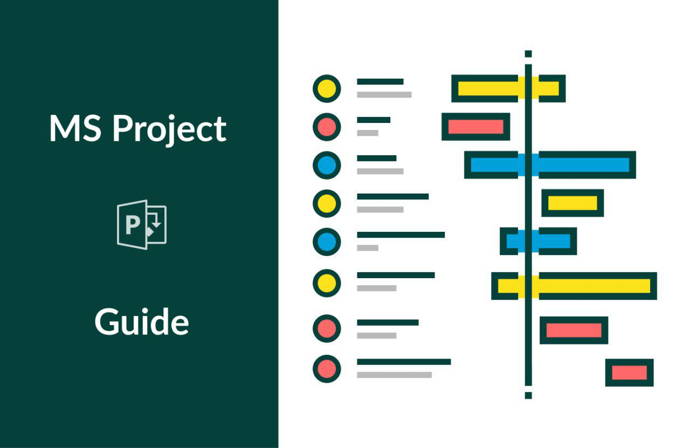
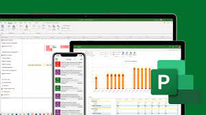
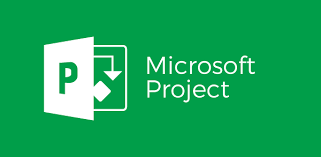
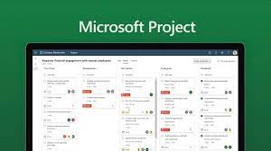

| | MICROSOFT PROJECT |
Apresentação
|  | O QUE É O MICROSOFT PROJECT? O MS Project é um programa de computador (software) utilizado para o gerenciamento de projetos, é considerado o programa mais conhecido e mais utilizado no mundo. Entre as suas funções ele ajuda no controle de informações a respeito de dados técnicos, duração e recursos do projeto. |
| QUAIS FUNÇÕES CONTEM NO MS PROJECT? Com o Project, a Microsoft desenvolveu recursos para designar tarefas, auxiliar gerentes no desenvolvimento de planos, fazer acompanhamento de progressos, gerenciar orçamentos e analisar fluxo de trabalho |  |
| QUANTO GANHA ALGUEL QUE TRABALHA COM O PROJECT? E de acordo com o SINE (Site Nacional de Empregos) o salário de um gestor de projetos varia entre 4 mil e 28 mil reais, dependendo do tempo de experiência e do porte da empresa. |
| QUAIS SAO OS RECURSOS DO MS PROJECT? Se pararmos para pensar a respeito dos tipos de recursos tácitos que podemos ter à disposição dentro de um projeto, basicamente chegaremos aos 3 possíveis tipos de recursos: Recursos de trabalho; Recursos materiais; Recursos de custo. |
|  |  | .jpg "IMAGEM") |
| Sobre Nós |